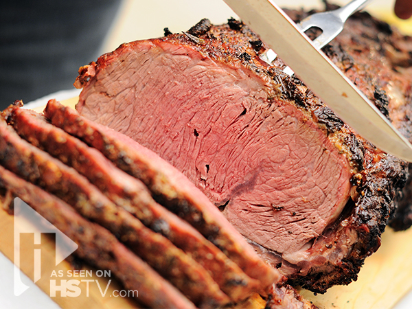

Prime Rib

Description
If you've ever carved into a prime rib at a big holiday meal expecting a juicy, perfectly pink interior only to discover a dry, overcooked roast, this recipe is for you.
This simple, foolproof "mathematical method" for making the very best prime rib will greatly increase your chances of success. Here is the formula: Multiply the exact weight times 5 minutes. For me it was 5.35 x 5 = 26.75 minutes, which we round up to 27.
Ingredients
- 1 (4 pound) prime rib roast
- 1/4 cup unslated butter, softened
- 1 tablespoon freshly ground black pepper
- 1 teaspoon herbes de Provence
- kosher salt to taste
Steps
- Place prime rib roast on a plate and bring to room temperature, 2 to 4 hours
- Preheat an oven to 500 degrees F
- Combine butter, pepper, and herbes de Provence in a bowl; mix until well blended. Spread butter mixture evenly over entire roast. Season roast generously with kosher salt.
- Roast the 4-pound roast in the preheated oven for 20 minutes. (If your roast is larger or smaller than 4 pounds, see footnote to calculate cooking time.)
- Turn oven off and, leaving the roast in the oven with the door closed, let the roast sit in the oven for 2 hours.
- Remove roast from the oven, slice, and serve.